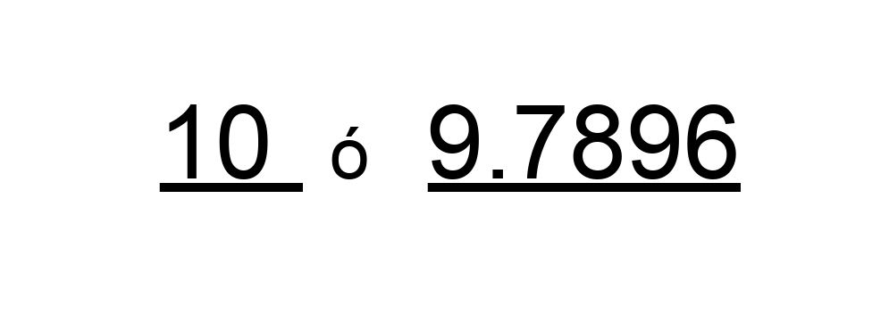
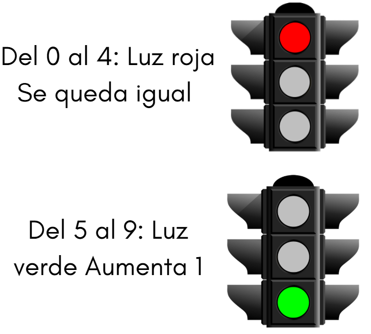
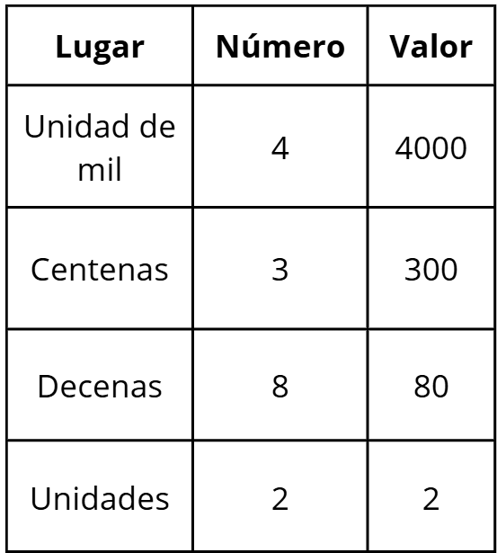

Observa estos dos números, ¿con cuál crees que es más sencillo hacer operaciones?
Probablemente elegiste 10, y para hacer operaciones más rápida y sencillamente nos puede ser útil el redondeo.
Redondear significa cambiar un número por otro cercano, para hacerlo más fácil de usar.
Lo usamos cuando no necesitamos la cantidad exacta, sino solo una aproximación.
¿Cómo hacerlo?
1.Mira el dígito que está justo a la derecha del lugar que quieres redondear. Puede estar antes o después de la coma decimal, según el tipo de redondeo:
Parte entera
Parte decimal
2. Ahora, sigue estas dos reglas muy sencillas:
Redondear 47 a la decena más cercana.
Redondear 5.68 a la unidad más cercana.
Redondear 9.786 a la centésima más cercana.
Piénsalo así, para redondear un número hasta cierta posición, observamos el número justo a la derecha y como un semáforo, decide si "avanzamos" o no.
Este tema es bastante sencillo. El valor posicional significa que cada cifra en un número tiene un valor diferente dependiendo del lugar donde está. Ya habíamos visto un poco de esto en el tema de números grandes y sistema decimal.
Por ejemplo, el número 4,382 está formado por estas cifras:
Aunque el número 4 siempre vale cuatro, si está en los miles vale cuatro mil. El 8 en las decenas vale ochenta, no solo ocho.
Para leer bien los números grandes y también para entender cómo se forman.
La notación desarrollada es una forma de escribir un número “desarmado”, mostrando cuánto vale cada cifra según el lugar que ocupa.
Cada número tiene un valor diferente dependiendo de su posición: unidades, decenas, centenas, etc.
El número 5,216 en notación desarrollada se escribe así: 5,000 + 200 + 10 + 6
Esto nos muestra el valor de cada cifra:
1. El perímetro de una figura se obtiene:
2. ¿Qué unidad se usa para medir el área?
3. Si un cuadrilátero tiene lados de 10u, 10u, 10u y 10u, su perímetro es:
4. El área de un cuadrilátero se calcula:
5. El área de un triángulo con base 8u y altura 6u es:
6. El perímetro de un rectángulo de 12u de largo y 5u de ancho es:
7. Si un triángulo tiene base 10u y altura 5u, su área es:
8. ¿Cuál de las siguientes opciones describe mejor la diferencia entre perímetro y área?
9. Si un cuadrilátero tiene base 15u y altura 4u, su área es:
10. El área de un triángulo con base 12u y altura 10u es:
11. Si un jardín tiene forma de cuadrilátero con lados 20u, 20u, 15u y 15u, su perímetro es:
12. Imagina que quieres cercar y luego cubrir con pasto un terreno rectangular de 18u de base y 7u de altura. ¿Cuánto miden el perímetro y el área respectivamente?